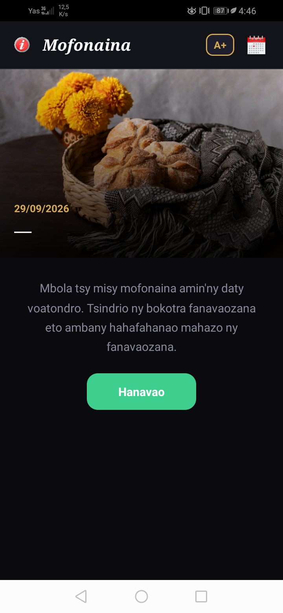
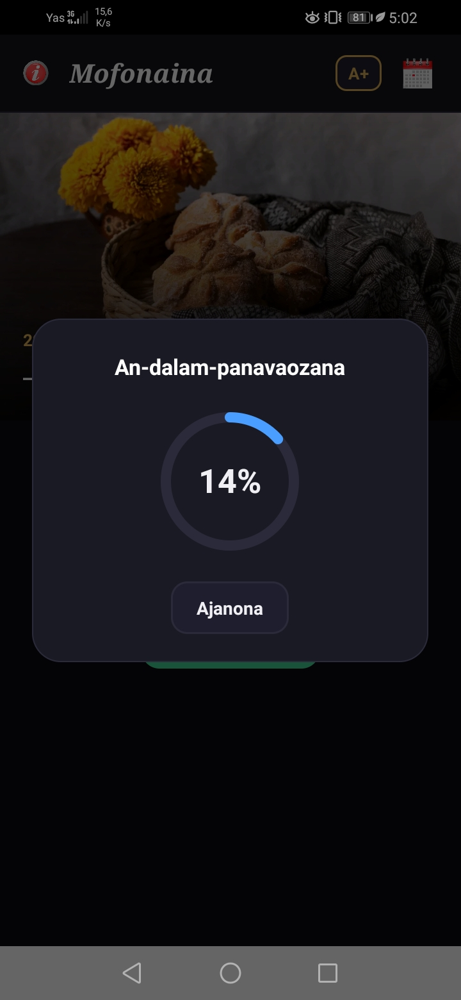
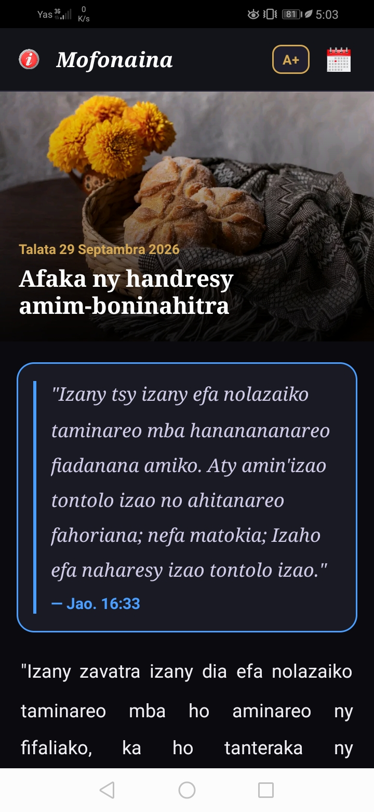
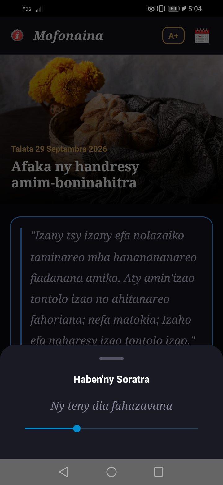

Ahafahanao misitraka ny mofonaina Advantista isan'andro izay misy fanavaozana isam-bolana na isan-telovolana.
Indreto ny endriky ny mofonaina isan'andro, avy amin'ny fahitana ao anaty application.




Fanatsarana hita ao amin'ny version 1.1: fanatsarana ny design ary fanatsarana ny lafiny fanaovana fanavaozana (mis à jour)